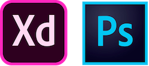
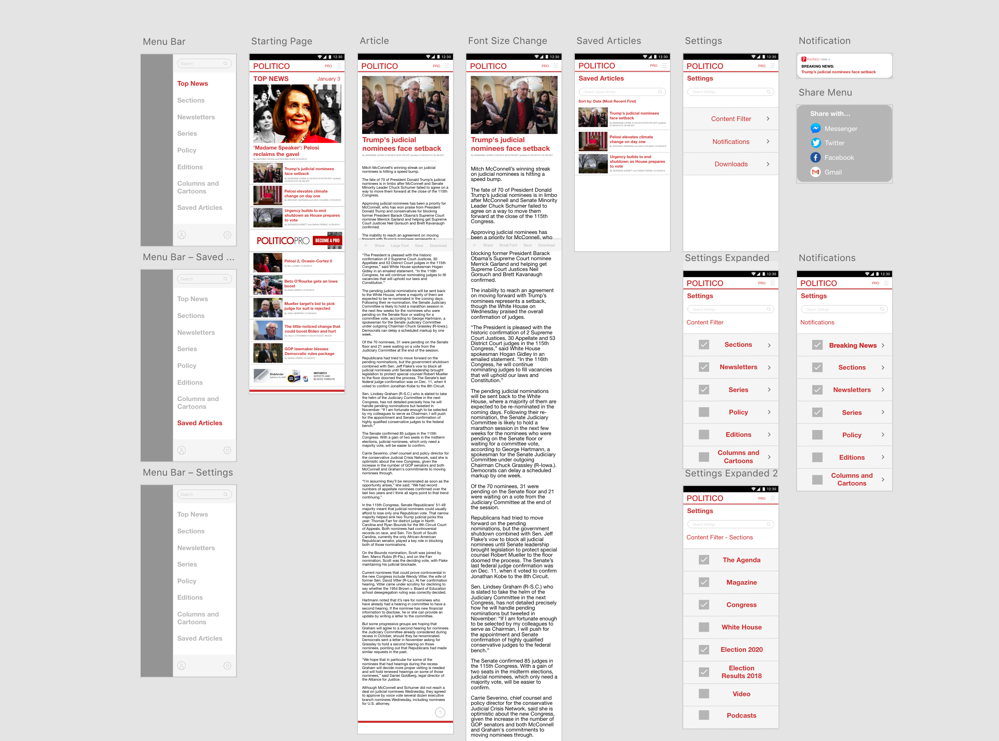

Redesigning the POLITICO App
A UX Case Study of the POLITICO Android App


Background
As we approached the 2018 mid-term elections, I began reviewing websites and their associated applications to
gather the information I needed in order to be informed on the issues and candidates. I downloaded a handful of
different news apps on my phone, including POLITICO.
I was familiar with POLITICO having read articles on their website before. I went to download the app and I
noticed a lot of bad reviews, which surprised me because I thought the website was fine.
When I first opened the app, everything appeared functional, although a bit dated in appearance. However, many
problems began to arise once I began to use the app. The more I used it, the more frustrated I became with the
entire experience.
I decided to turn my frustration as a user into a UX case study and completely redesign the app.
The POLITICO App I redesigned was Ver. 2.1.3 (Last Updated August 1, 2014).
The Design Process
Developing Ideas
The Redesign
Analyzing the Current App
The POLITICO App I redesigned was Ver. 2.1.3 (Last Updated August 1, 2014). The phone I used was a OnePlus 6T.
To begin, I simply opened the app and attempted to explore all the different features in order to determine the
errors that interfere the most with a typical user. The following images illustrate the main features of
the app; Top News, Navigation Menu, Sharing, and Settings. There was also a Save Article feature, but only a
single pop-up.
The biggest issue that I encountered was being unable to open articles when tapping on them. I soon learned that
I would, for some reason, need to scroll down a little before being able to open an article.
In addition, I had no obvious way of navigating through the app. Eventually, I was able to open the navigation
menu by tapping the square icon on the top bar, but nothing about that icon indicated the presence of a
navigation menu. Once opening the navigation menu, I was greeted with too many different options to choose from.
This caused it to take much longer for me to find the specific option I wanted.
Thirdly, the share menu displayed many icons of extremely varying sizes in a random order that made it harder
to
locate the preferred app.
Lastly, while not pictured above, the Save Article feature did not indicate where the article could be viewed
later or any way to customize save location.
I continued my app analysis with the app reviews on the Google Play Store. This helped me quickly locate any
common problems that I may
have missed in my short time using the app. The general consensus was that in addition to the dated aesthetic,
the notifications were unreadable and therefore useless. As a result, many users were uninstalling POLITICO and
turning towards other news apps.
User Research
Given all these issues with the POLITICO app, I wanted to get some input from people who consistently use news
apps, like POLITICO, to see which features people like and dislike. Unfortunately, since I was at home during
winter break, I was unable to perform any user interviews in person. To get around this obstacle, I messaged
some of the most active users on reddit.com/r/politics. I asked them the following questions:
- Which (political) news apps do you have on your mobile device?
- What features do you like about those apps?
- What do you not like about these apps?
- What are the 3 most important features any news app should have?
From 11 users I aggregated the following information:
- Many of the users indicated that they used apps such as Google News, Apple News, Reddit, or Twitter, rather
than a single news source app like POLITICO.
- The majority of responses emphasized the importance of timely push notifications for breaking news.
- The main issue people had with news apps was actually too many push notifications.
- The top 3 most important features were: Customizability/Filter Options, Easy to use navigation, No ads
Personas
POLITICO Research
In an ideal world, designers would design an app entirely around the user's needs and wants. Unfortunately, that is not entirely possible as the content creators still need to make some amount of revenue through ads and other paid content. In an effort to achieve a balance between user needs/wants and content creator needs/wants, I did some research into POLITICO.
First and foremost, POLITICO is a news company based in the D.C. Metro area focused primarily on politics and policy. Their audience is comprised of “a highly-engaged community of senior government and business stakeholders, associations, corporations, media, academics and non-profits” in addition to the average lay reader.
I found that 40% of all of POLITICO's revenue is from POLITICO PRO. POLITICO PRO is a subscription service that offers "exclusive reporting, analysis, and tools." In addition, one user states that “[T]he service Politico Pro provides is highly specialized and is not offered, in this format, by any other vendor.” Given the importance of POLITICO PRO, one would assume that it is being pushed as much as possible to the readers. However, when looking at the current app, there is almost no mention of POLITICO PRO, except in the hidden navigation menu.
Secondly, 50% of POLITICO's revenue is from advertisements. Ads are tricky as most users despise ads that impede in the usage of the app and/or are obnoxious. Unfortunately, advertisements cannot be completely omitted, as the user interviews requested. However, designing ads in a less intrusive way will be a focus in the redesign.
Sources: https://www.politico.com/live-events/about | https://www.cjr.org/the_profile/can_politico_rise_again.php |
https://www.politicopro.com/
Redesign Focuses
From the user research, POLITICO research, and my own experiences with the app, the main focuses of the redesign are as follows:
- Design an easy to use and intuitive form of navigation
- Fix notifications to be readable, as well as customizable
- Expand customizability through filtering content
- Make sharing content easier
- Make saved articles more visible
- Bring more focus to POLITICO PRO
- Design ads in an unobtrusive manner
- Update the dated aesthetic
Sketches
Home and Navigation:
For the home screen (top news), the apps current layout seemed to still be good, so I kept that. In the end, I swapped the position of the image with the headline. The navigation is where most of the thinking had to be done. In an effort to minimize clutter and reduce the number of options (Hick's Law), I decided to limit the options and then have them expand on tap. Quickly going through the current navigation menu indicated the main headers were "Top News, Sections, Newsletters, Series, Policy, Editions, and Columns and Cartoons." Those main headers where the ones I put in the navigation menu and hid the rest in their respective sub-menus.
Top Bar:
There was not a whole HELLOthat I thought needed to be changed about the top bar of the app. However, I decided to use a hamburger menu icon to hide the navigation. I debated putting a search option in the top bar, but instead put it in the navigation menu so the top bar wouldn't be too cluttered. In the end, I put a button to access POLITICO PRO content, since it is one of their main sources of revenue.
Notifications:
This was perhaps the most important feature according to the users. Since the current app's notifications were broken, I did not really have anything to go off of. I ended up deciding on a simple, yet clean notification with the text "BREAKING NEWS:" followed by the article headline.
Article:
For the article itself, the current design was sufficiently good. I did add a bottom options bar with different actions such as "back, share, save article, download." At first I thought having icons would be better and produce a less cluttered bottom options bar, but there ended up being too much space, and some of the icons were too ambiguous. As a result, I kept the text for each action, except for the back arrow. The back arrow is much more ubiquitous in mobile designs, so in order to minimize the clutter from the text I kept the arrow.
Saved Articles:
I used almost the same design as the home screen (top news) minus the big image and headline. I added a search bar for users who save a lot of articles. I also decided to add a "Sort by" option in case readers want to locate an article from a long time ago.
Settings:
I found this to be the most tricky page to design out of all of them. Since the redesign must meet the needs of the users, I would have to include all 46 different types of content that users can toggle on/off whether or not they are interested in it. I first decided to use drop down menus, but quickly realized that it would just cover up the other content on the page. Clicking to expand would be a better design choice. While it would be hidden from the user at first, I felt that it would be better than displaying everything at once. Additionally, to alleviate the overwhelmingness of all the options, I decided to add a search bar in case the reader knows exactly what they want.
High Fideltiy Wireframe
